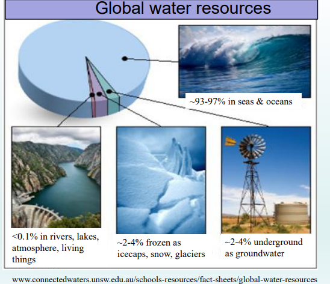
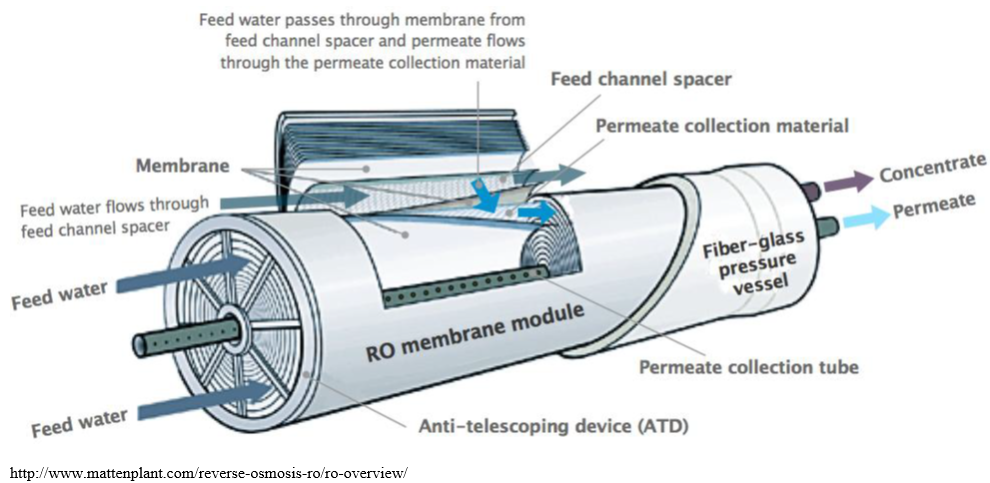
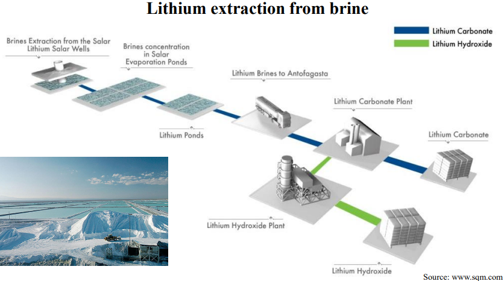
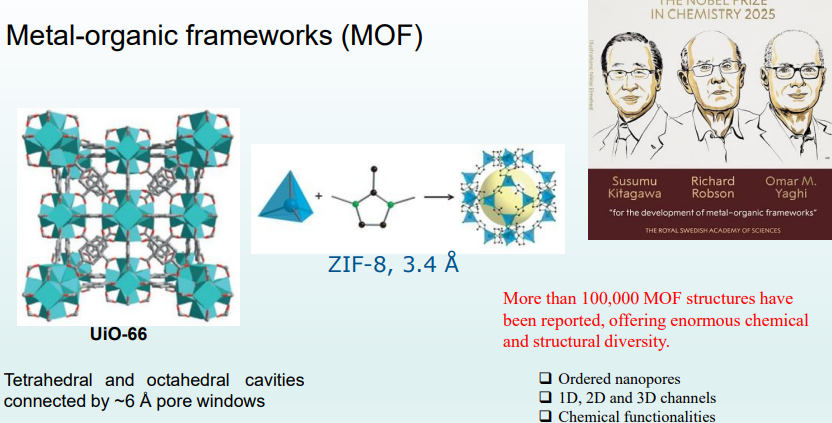
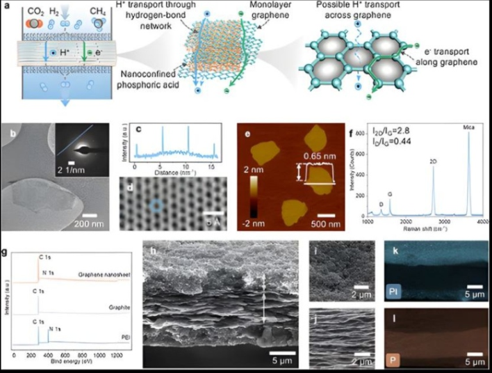

在全球资源日益匮乏、环境挑战加剧的今天，人类如何从浩瀚的海洋中高效获取生命之源？如何在新能源浪潮中，以更绿色、更环保的方式提取被誉为‘白色石油’的锂资源？又该如何突破燃料电池的技术瓶颈，迈向更加清洁、低碳的未来？
作者：范志良
9月23日晚，墨尔本中国高校校友会联盟（MCUAA）系列讲座邀请来自澳大利亚蒙纳士大学化学与生物工程系的王焕庭教授，带来题为《膜与纳米材料在分离和能源中的应用》的精彩学术报告。本次讲座不仅带领校友深入了解膜科学与纳米材料领域的前沿进展，也生动展示了前沿科研成果如何走向产业化，并为解决水资源、新能源等全球性挑战提供技术支撑。
膜科学领域的国际领军人物
讲座开始前，墨尔本中国高校校友会联盟（MCUAA）主席范志良博士向与会听众隆重介绍了本期主讲嘉宾。王焕庭教授现任蒙纳士大学化学与生物工程系约翰·蒙纳士爵士杰出教授、蒙纳士大学副校长兼苏州校区校长，澳大利亚工程院院士、澳大利亚科学院院士、澳大利亚研究理事会（ARC）桂冠学者，曾任澳大利亚节能分离研究中心主任、蒙纳士大学膜创新中心首任主任, 在膜分离、纳米材料及其能源与环境应用领域具有广泛的国际影响力。
王焕庭教授本科毕业于华东理工大学无机非金属材料专业，后获中国科学技术大学高分子化学专业硕士学位和材料化学专业博士学位，并先后在加州理工学院和加州大学河滨分校从事博士后研究。2005年加入蒙纳士大学。其研究方向涵盖膜科学与技术以及纳米材料在气体分离、海水淡化与水过滤纯化、离子分离与矿物提取、生物活性手性分子分离，以及离子导体膜与催化剂在电化学能源（如燃料电池和电解制氢）中的应用。目前，王焕庭教授已发表500余篇期刊论文，相关技术成果已转让于6家澳大利亚、美国和中国公司，并创建了两家蒙纳士大学膜科技初创企业。
膜技术赋能淡水生产以及水处理与纯化
1. 生命之源的枯竭危机
讲座伊始，王焕庭教授首先将我们的视野拉向了宏观的全球生态图景。图片展示了令人心痛的干旱土地、触目惊心的水体污染，以及不断增长的人口对资源带来的沉重压力。当前，全球有超过20亿人正面临着水资源短缺的严峻挑战。
从国际水管理研究所（International Water Management Institute）提供的全球水资源短缺地图中可以清晰地看到，无论是物理性缺水还是经济性缺水，水危机已经蔓延至全球多个大洲。地球虽被称为“水球”，但人类真正能利用的淡水资源却少得可怜：

- 全球约93%至97%的水资源分布在海洋中，属于无法直接饮用的咸水。
- 约2%至4%的水被冻结在冰盖、积雪和冰川中。
- 约2%至4%的水作为地下水深埋于地下。
- 而存在于河流、湖泊、大气以及生物体内的地表淡水，占比甚至不到0.1%。
与此同时，人类对淡水的需求却在全方位爆发：无论是维持生命的日常饮用，还是工业制造与采矿，亦或是农业与食品生产，乃至关乎公共卫生的环境系统，无一不需要海量淡水的支撑。
2. 海水淡化：向海洋要淡水的技术演进
面对淡水匮乏，人类将目光投向了占地球水资源绝大部分的海洋。海水淡化成为了解决淡水短缺的核心方案。王教授指出，实现水盐分离（即将纯水从盐水中提取出来，或将盐分从水中剔除）是这一过程的核心。
传统的反渗透技术之前，人类主要依赖热法海水淡化，即蒸馏技术。这包括多级闪蒸、多效蒸馏以及蒸汽压缩等工艺。然而，热法淡化面临着致命的短板——极高的能源消耗: 据统计，热法生产1立方米淡水需要消耗6至16千瓦时（kWh）的能量。在碳排放要求日益严格的今天，这种高能耗模式显然难以持续。
3. 反渗透（RO）膜：现代海水淡化的“心脏”
正是为了克服高能耗，基于膜分离技术的反渗透（Reverse Osmosis, RO）脱盐技术应运而生，并成为了目前主流的海水淡化技术。
什么是膜？王教授深入浅出地解释道：膜是一种允许特定离子或分子渗透通过的屏障。驱动物质穿过膜的动力主要来自浓度差、压力差或电势差。在水处理与纯化领域，根据需要去除的物质大小不同，膜技术被细分为多种：
- 微滤：孔径在0.1至10微米之间，依靠尺寸排阻原理，主要用于去除原生动物（如隐孢子虫、贾第鞭毛虫）和细菌。
- 超滤：孔径在1纳米至100纳米左右，可去除病毒。
- 纳滤：孔径在1纳米至2纳米左右，可去除天然有机物、微污染物和藻类毒素。
- 反渗透（RO）与正渗透：孔径小于1纳米，能够有效阻截水合离子，其原理是基于溶解-扩散机制。
在反渗透过程中，通过对咸水一侧施加高于自然渗透压的巨大压力，迫使纯水分子逆向穿过半透膜，而盐分则被截留在浓缩液中。交叉流动的设计使得给水在流过膜表面时，一部分成为淡水，另一部分带走盐分成为浓盐水。

王教授展示了螺旋卷式平板RO膜的实物剖面图与结构图。这种膜模块就像一个精密的发条，由给水通道隔网、膜、透过液收集材料等层层卷曲在玻璃钢压力容器内，中间是透过液收集管。RO膜的孔径小于1纳米，能够精准拦截半径为几埃（Å）的各种水合离子，如钠离子（水合半径3.58 Å）、氯离子（水合半径3.32 Å）、钙离子（水合半径4.2 Å）等。
4.珀斯海水淡化厂的实战解析
为了让听众更直观地理解RO膜在工业中的应用，王教授详细拆解了位于澳大利亚西海岸的珀斯海水淡化厂（Perth Seawater Desalination Plant）。 该厂位于Kwinana，于2006年底竣工，每年可生产450亿升新鲜饮用水，满足了珀斯约18%的城市供水需求。这座庞然大物的运转过程堪称精密的工业艺术：
- 海水取水系统：取水口位于海平面以下10米、离岸200米的Cockburn Sound海底。通过巨大的玻璃钢管道，每天将3.63亿升海水引入力争实现重力自流的陆上泵站。
- 化学加药与预处理：为了防止系统内生物滋生，取水处每隔一到两周会进行次氯酸钠冲击加药。随后，必须注入焦亚硫酸钠以确保水中完全无游离氯，因为RO膜一旦接触氯就会被氧化破坏。紧接着，海水通过包含沙子/无烟煤床的24个卧式过滤器，以及5微米的过滤器，彻底清除悬浮固体，以防止RO膜发生物理污染。
- 核心的反渗透系统：预处理后的海水进入由数万支膜组件构成的RO阵列。将产水TDS极致降低至30 mg/l。
- 再矿化与消毒：脱盐后的水过于纯净且呈酸性，需要每天加入6吨石灰和2吨二氧化碳，以提高水的pH值、硬度和碱度。最后进行氯化消毒（保障管网卫生）和氟化处理（保护牙齿免受蛀牙），方可输入市政管网。
- 浓盐水排放：产生的浓缩海水通过带有40个喷嘴的扩散器，排放回500米外的海洋中，确保在50米范围内迅速与自然海水混合，降低生态影响。
王教授指出，目前RO海水淡化厂生产1立方米淡水的能耗约为3至6 kWh，最低可达2.2 kWh。尽管这已经比热法低得多，但距离理论最低能耗（当回收率为50%时为0.97 kWh，回收率为75%时为1.29 kWh）仍有优化空间。
5. RO膜的制造密码与当代挑战
如此神奇的RO膜是如何制造出来的？王教授揭示了其微观制造工艺。
现代RO膜通常是薄膜复合（TFC）结构，制造分为两步：
- 支撑层制备：在无纺布支撑物上，利用非溶剂诱导相分离法，浇铸聚砜（Polysulfone）溶液。溶剂与非溶剂的交换形成了具有海绵状孔（Sponge-like pores）和指状孔（Finger-like pores）的不对称固体膜基质。
- 选择性涂层制备：利用界面聚合法，在水相的间苯二胺与己烷油相的均苯三甲酰氯发生交联反应，在支撑层表面生成极薄的交联聚酰胺选择层。在电子显微镜下，这一层呈现出特征性的‘山脊和山谷’粗糙形貌。
然而，聚酰胺RO膜目前面临着三大严峻挑战，这也是材料科学家们攻坚的方向：
- 渗透性-选择性权衡（Trade-off）效应：目前膜的水渗透系数与水-盐选择性之间存在制约关系。要实现更高的脱盐率，往往要牺牲产水速度。
- 高污染倾向：聚酰胺膜表面粗糙的“山脊和山谷”结构极易截留污染物，导致膜通量下降。
- 化学稳定性差：正如珀斯水厂的预防措施所示，聚酰胺RO膜对氯及其他强氧化剂较为敏感，长期或较高剂量的氯暴露可能导致不可逆损伤，因此工业系统通常需要在RO处理前进行脱氯。
面对这些挑战，王焕庭教授团队以及国际同行正致力于利用纳米技术开发新型RO膜。例如，将人工设计的纳米通道以及氧化石墨烯、水通道蛋白（Aquaporin）碳纳米管等引入膜材料中来提高膜的性能。令人振奋的是，前沿研究的成果正在产业化研究希望在不久的将来，这些新型反渗透膜能走出实验室为产业赋能。
多孔金属有机骨架（MOF）材料在提锂中的潜在应用
随着全球向新能源转型，电动汽车产业呈现爆炸式增长，作为电池核心原料的锂资源被誉为“白色石油”。王焕庭教授在讲座的第二部分，详细介绍了先进多孔材料——金属有机骨架材料（Metal-organic frameworks, MOFs）在提锂与锂回收中的潜在应用。
1. 锂资源焦虑与传统提取之痛
目前，全球50%的锂产量（占储量的25%）来自硬岩（如锂辉石），而75%的储量则蕴藏在盐湖卤水（Brines）中。 到2030年，电池制造对全球锂的需求量可能翻番。

传统的盐湖提锂工艺（如智利阿塔卡马盐湖）依赖于极其庞大的蒸发池系统（Evaporation Ponds）。将含锂卤水抽出后，需要在阳光下暴晒浓缩长达数月甚至数年，随后再通过密集的化学反应沉淀出碳酸锂或氢氧化锂。这种方法不仅耗时极长、占用大量土地，而且极其消耗化学试剂，对脆弱的生态环境极不友好。因此，开发新型的锂离子分离膜，不仅是技术创新，更是催生新产业的必然要求。
2. MOF材料：纳米级别的“精密筛网”
在这场技术革命中，MOF材料脱颖而出。MOF是由金属离子或金属簇与有机配体通过配位键连接而成的多孔晶体材料。王教授指出，目前已有超过10万种MOF结构被报道，它们提供了巨大的化学和结构多样性。MOF具有高度有序的纳米孔道（1D、2D和3D通道）以及丰富的化学功能性。

以UiO-66和ZIF-8这两种经典的MOF材料为例：UiO-66拥有由约6埃（Å）的三角形孔窗（pore windows）连接的四面体和八面体空腔（cavities）；而ZIF-8的孔窗尺寸约为3.4埃。这种极其均一且处在亚纳米尺度的孔隙，为精确筛分水合半径极为相近的离子提供了物理基础。
3. 师法自然：仿生离子通道的突破
大自然是最好的老师。王焕庭教授团队从生物细胞膜上的生物离子通道（Biological ion channel）中汲取了灵感。生物离子通道具有特定的选择性过滤器（Ion selectivity filter）和离子结合位点，能够实现离子的超快速、高选择性传输，其传输速率可达每秒 107 到 108 个离子。
王教授团队巧妙地将ZIF-8 MOF膜设计为多重仿生离子通道。由于ZIF-8的孔窗约为3.4 Å，而其内部空腔约为11.6 Å。当不同的离子（如 Li+、Na+、K+、Rb+ 等）穿过这个孔道时，它们的水合外壳（Hydration shell）必须发生形变或部分脱水（Dehydrating）。在这个过程中，特定离子与MOF框架发生的相互作用决定了其通过的速率。实验表明，在200 mV的电压下，ZIF-8膜的离子传输速率可达约 106 ions s-1，这一速度已经非常接近天然的生物离子通道。这种“能效高、环境友好”的离子传输机制，为MOF材料在未来的锂矿开采和新型海水淡化提供可能。
4. 极致筛分：单价/双价离子的千倍选择性
在提锂工艺中，最大的技术难点之一是如何将锂离子（单价）从含有大量镁离子、钙离子（双价）的混合卤水中高效分离出来，因为它们的物理化学性质极其相似。
王教授团队展示了基于UiO-66的不对称MOF亚纳米通道（Asy-MOFSNC）。他们首先在锥形的PET（聚对苯二甲酸乙二醇酯）纳米孔壁上接枝苯甲酸基团，随后通过原位生长UiO-66纳米晶体，形成了孔径约为6 Å的精密通道。这种仿生通道实现了优异的性能：其对单价离子（如 Li+）与双价离子（如 Mg2+、Ca2+）的选择性比值竟然高达 1000！这意味着该膜能够极度高效地阻挡镁离子，而让锂离子顺畅通过。
驱动氢能时代——二维材料在燃料电池与氢气分离中的应用
在讲座的第三部分，王焕庭教授带领听众进入了新能源的另一条核心赛道——氢能与燃料电池。他重点介绍了二维材料（特别是石墨烯基材料）在燃料电池质子传导以及氢气高效分离中的前沿应用。
1. 燃料电池的高温挑战与质子传导膜瓶颈
质子交换膜燃料电池（PEMFC）被公认为下一代清洁动力汽车和固定发电站的最优解之一。然而，传统的全氟磺酸型质子交换膜（如Nafion膜）存在一个重大局限：它们高度依赖水分子来传导质子。一旦工作温度超过100摄氏度，膜内的水分会迅速蒸发，导致质子电导率断崖式下降。
但是，提高燃料电池的操作温度在工程上具有巨大的吸引力：高温可以显著提高催化剂对一氧化碳等杂质的耐受性（防止催化剂中毒），极大简化电池的热管理和水管理系统，并提高整体系统效率。因此，开发在无水、高温环境下仍能高效传导质子的膜材料，是燃料电池领域的难题之一。
2. 重磅突破：质子穿梭纳米片膜
王教授团队巧妙地利用了二维石墨烯和氮化硼纳米片，并用磷酸对其进行深度浸润。研究发现，在工作温度达到250摄氏度时，这种复合膜的质子电导率远远超过了传统的 聚苯并咪唑掺杂磷酸膜。 在实际的 H2-O2 燃料电池测试中，使用该膜组装的单电池在250摄氏度下，峰值功率密度实现了突破，在同类高温质子交换膜燃料电池中其性能优于此前报道的大多数无水质子传导膜。不仅如此，该膜还能完美适配以甲醇为直接燃料的电池，在250摄氏度下同样表现出极高的峰值功率，展现了极强的燃料兼容性。这一突破性进展被包括澳大利亚媒体在内的多家机构广泛报道，被誉为“解锁清洁氢能未来的关键一步”。
3. 高效氢气纯化：电子-质子混合传导膜的设计
不仅是在燃料电池中大放异彩，这种二维石墨烯基材料在氢气的高纯度分离提取中同样展现出颠覆性的潜力。王焕庭教授团队将石墨烯纳米片基混合质子-电子传导膜用于高效氢气纯化。

在制氢工业（如甲烷蒸汽重整）中，产生的混合气体通常含有大量 CO2、CO 和 CH4，必须将氢气从中分离提纯。传统的氢分离膜（如钯金属膜）极其昂贵且容易中毒。王教授团队提出了一种全新的策略。
在膜的制备过程中，他们首先通过真空组装技术将单层石墨烯纳米片堆叠成膜，利用喷枪在膜的正反两面均匀涂覆了一层多孔 Pt/C（铂碳）催化剂层，从而形成了一个类似于“三明治”的复合结构。
这种设计的精妙之处在于它独特的传导机制：
- 氢气解离：当混合气体接触到膜表面的 Pt/C 催化剂时，氢气分子（H2）被催化解离成质子（H+）和电子（e-）。
- 电子与质子同步传输：中间的复合膜不仅能像前面提到的那样高效传导质子，而且石墨烯本身的共轭碳网还能传导电子！这形成了一种完美的混合质子-电子传导膜。
- 氢气重组：质子和电子分别穿过膜后，在另一侧的 Pt/C 催化层重新结合成极高纯度的氢气分子释放出来。
这种基于石墨烯的催化膜系统具有很高的氢气通量，同时能够完全阻挡包括二氧化碳在内的其他气体，显示出其在高效氢气纯化以及更广泛的涉氢化学品生产领域的应用潜力。
顶尖科研回馈社会，校友力量共筑未来
在讲座的最后，王焕庭教授总结了其课题组的核心愿景。从利用纳米通道进行气体分离（碳捕获与氢气提纯）、水处理（净水与海水淡化），到利用电化学原理进行分子与离子的分离与传输（燃料电池、电催化、二氧化碳转化），再到突破性的生物分子分离、手性拆分与医疗透析，以及造福未来的矿物提取（锂及其他金属的回收）。王教授和他的团队正以“膜”为利刃为这些领域做出努力和贡献。
讲座结束后，在MCUAA理事、天津大学墨尔本校友会会长刘莘的主持下，现场进入热烈的互动交流环节。校友们围绕膜材料的纳米结构制备、人工智能辅助膜材料设计、锂资源提取与新能源汽车电池回收，以及澳大利亚锂产业发展等话题踊跃提问。王焕庭教授结合科研实践与产业化经验进行了耐心解答，并与校友就科技成果转化及未来合作进行了深入交流。
这是一场汇聚前沿科学、工程实践与产业洞察的精彩分享。我们不仅为王焕庭教授团队在全球膜科学与纳米材料领域取得的卓越成就深感敬佩，更为他们致力于破解全球水资源挑战、推动新能源技术发展的科研担当与社会责任感所深深折服。
MCUAA将继续致力于为墨尔本中国高校校友打造高质量学习与交流平台，围绕科技前沿、教育发展、职业规划、人文素养及健康生活等主题推出更多系列讲座，助力校友持续学习、共同成长，共建更加健康、更有活力、更具凝聚力的MCUAA社区。